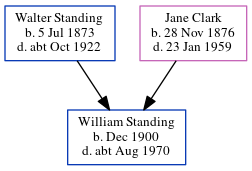

William James Standing 1900 - c1970
[ Home ] | [ Calendar ] | [ Surnames Index ] | [ Census Index ] | [ Family History ]The eldest of 3 children of Walter Standing (a laundry foreman) and Jane Clark (a head packer in laundry), William Standing, the fourth cousin once-removed on the father's side of Nigel Horne, was born in Charlton, London, England in Dec 19001,2,3,4.
During his life, he was living at Lansdowne Road in Charlton on Mar 31, 19011; and at 90 Charlton Lane in Charlton on Apr 2, 19112.
He died c. Aug 1970 in Surrey, England4.
Parents
- Walter William was born on Jul 5, 1873
- Jane Elizabeth was born on Nov 28, 1876
Citations
- 1901 England, Wales & Scotland Census - Findmypast (was age 0 and the son of the head of the household)
- 1911 Census for England & Wales - Findmypast (was age 10 and the son of the head of the household)
- England & Wales births 1837-2006 - Findmypast
- England & Wales deaths 1837-2007 - Findmypast
Media
1911 Census for England & Wales - GBC/1911/RG14/02850/0347/3
England & Wales births 1837-2006 - BMD/B/1901/1/AZ/000555/001
England & Wales deaths 1837-2007 - BMD/D/1970/3/AZ/001023/035
Family Tree
Generated by ged2site. Last updated on Jun 11, 2024